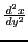
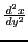

Next: Change of the dependent Up: Change of variable Previous: Change of variable Contents Index
It is sometimes desirable to transform an expression involving
derivatives of  with respect to
with respect to  into an equivalent
expression involving instead derivatives of
into an equivalent
expression involving instead derivatives of  with respect to
with respect to  .
Our examples will show that in many cases such a change
transforms the given expression into a much simpler one.
Or perhaps
.
Our examples will show that in many cases such a change
transforms the given expression into a much simpler one.
Or perhaps  is given as an explicit function of
is given as an explicit function of  in a
problem, and it is found more
convenient to use a formula involving
in a
problem, and it is found more
convenient to use a formula involving
 ,
, etc., than one involving
,
, etc., than one involving
 ,
,
 , etc. We shall now proceed to find the
formulas necessary for making such transformations.
, etc. We shall now proceed to find the
formulas necessary for making such transformations.
Given  , then from item XXVI in §5.1,
we have
, then from item XXVI in §5.1,
we have
Solution. Substituting from (11.1), (11.3), (11.4),
david joyner 2008-08-11